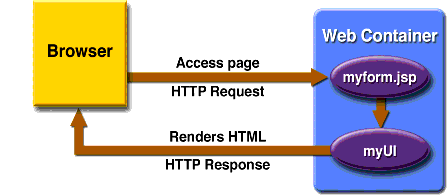

JavaServer Faces Technology
JavaServer Faces technology is a server-side user interface component framework for Java technology-based web applications.
The main components of JavaServer Faces technology are as follows:
- An API for representing UI components and managing their state; handling events, server-side validation, and data conversion; defining page navigation; supporting internationalization and accessibility; and providing extensibility for all these features
- Two JavaServer Pages (JSP) custom tag libraries for expressing UI components within a JSP page and for wiring components to server-side objects
The well-defined programming model and tag libraries significantly ease the burden of building and maintaining web applications with server-side UIs. With minimal effort, you can
As shown in Figure 17-1, the user interface you create with JavaServer Faces technology (represented by
myUIin the graphic) runs on the server and renders back to the client.

Figure 17-1 The UI Runs on the Server
The JSP page,
myform.jsp, is a JavaServer Faces page, which is a JSP page that includes JavaServer Faces tags. It expresses the user interface components by using custom tags defined by JavaServer Faces technology. The UI for the web application (represented bymyUIin the figure) manages the objects referenced by the JSP page. These objects includeThis chapter gives an overview of JavaServer Faces technology. After going over some of the primary benefits of using JavaServer Faces technology and explaining what a JavaServer Faces application is, it lists the various application development roles that users of this technology fall into. It then describes a simple application and specifies which part of the application the developers of each role work on. The chapter then moves on to summarizing each of the main features of JavaServer Faces technology and how the various pieces of an application that uses these features fit together. Finally, this chapter uses a page from a simple application to summarize the life cycle of a JavaServer Faces page.
All of the material in The J2EE(TM) 1.4 Tutorial is copyright-protected and may not be published in other works without express written permission from Sun Microsystems.